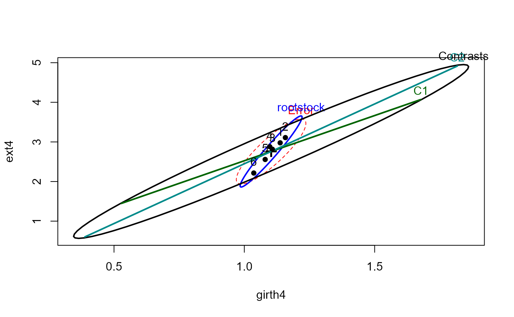
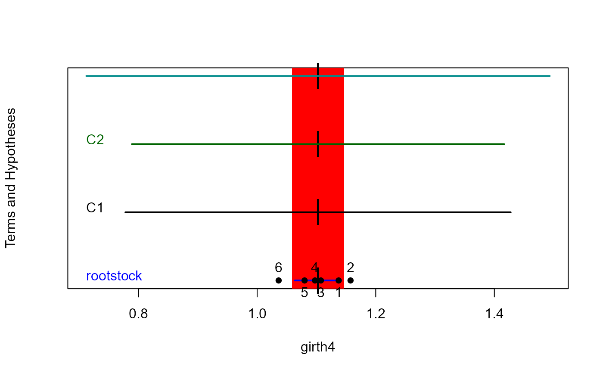
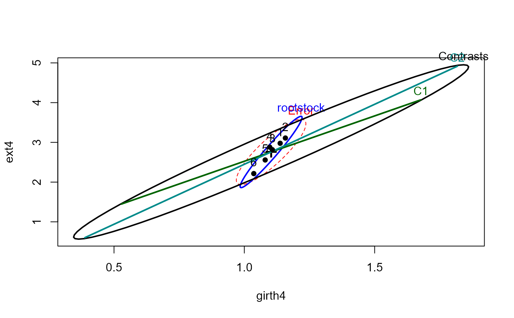
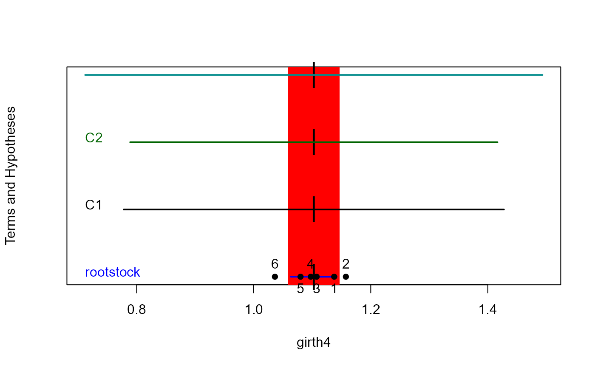

Growth of Apple Trees from Different Root Stocks
RootStock.RdIn a classic experiment carried out from 1918 to 1934, growth of apple trees of six different rootstocks were compared on four measures of size.
data(RootStock)Format
A data frame with 48 observations on the following 5 variables.
rootstocka factor with levels
123456girth4a numeric vector: trunk girth at 4 years (mm x 100)
ext4a numeric vector: extension growth at 4 years (m)
girth15a numeric vector: trunk girth at 15 years (mm x 100)
weight15a numeric vector: weight of tree above ground at 15 years (lb x 1000)
Details
This is a balanced, one-way MANOVA design, with n=8 trees for each rootstock.
Source
Andrews, D. and Herzberg, A. (1985). Data: A Collection of Problems from Many Fields for the Student and Research Worker Springer-Verlag, pp. 357--360.
References
Rencher, A. C. (1995). Methods of Multivariate Analysis. New York: Wiley, Table 6.2
Examples
# \dontshow{
# allow to work with car 1
if (packageDescription("car")[["Version"]] < 2) {
linearHypothesis <- linear.hypothesis
}
# }
data(RootStock)
## maybe str(RootStock) ; plot(RootStock) ...
root.mod <- lm(cbind(girth4, ext4, girth15, weight15) ~ rootstock, data=RootStock)
Anova(root.mod)
#>
#> Type II MANOVA Tests: Pillai test statistic
#> Df test stat approx F num Df den Df Pr(>F)
#> rootstock 5 1.3055 4.0697 20 168 1.983e-07 ***
#> ---
#> Signif. codes: 0 '***' 0.001 '**' 0.01 '*' 0.05 '.' 0.1 ' ' 1
pairs(root.mod)
 # test two orthogonal contrasts among the rootstocks
hyp <- matrix(c(2,-1,-1,-1,-1,2, 1, 0,0,0,0,-1), 2, 6, byrow=TRUE)
linearHypothesis(root.mod, hyp)
#>
#> Sum of squares and products for the hypothesis:
#> girth4 ext4 girth15 weight15
#> girth4 2.684223 7.573365 7.792122 1.617892
#> ext4 7.573365 22.489458 23.293194 5.760003
#> girth15 7.792122 23.293194 24.145778 6.090615
#> weight15 1.617892 5.760003 6.090615 2.248755
#>
#> Sum of squares and products for error:
#> girth4 ext4 girth15 weight15
#> girth4 0.3199875 1.696564 0.5540875 0.217140
#> ext4 1.6965637 12.142790 4.3636125 2.110214
#> girth15 0.5540875 4.363612 4.2908125 2.481656
#> weight15 0.2171400 2.110214 2.4816562 1.722525
#>
#> Multivariate Tests:
#> Df test stat approx F num Df den Df Pr(>F)
#> Pillai 2 1.426293 24.86102 8 80 < 2.22e-16 ***
#> Wilks 2 0.020401 58.51245 8 78 < 2.22e-16 ***
#> Hotelling-Lawley 2 26.121884 124.07895 8 76 < 2.22e-16 ***
#> Roy 2 25.254884 252.54884 4 40 < 2.22e-16 ***
#> ---
#> Signif. codes: 0 '***' 0.001 '**' 0.01 '*' 0.05 '.' 0.1 ' ' 1
heplot(root.mod, hypotheses=list(Contrasts=hyp, C1=hyp[1,], C2=hyp[2,]))

heplot1d(root.mod, hypotheses=list(Contrasts=hyp, C1=hyp[1,], C2=hyp[2,]))

# test two orthogonal contrasts among the rootstocks
hyp <- matrix(c(2,-1,-1,-1,-1,2, 1, 0,0,0,0,-1), 2, 6, byrow=TRUE)
linearHypothesis(root.mod, hyp)
#>
#> Sum of squares and products for the hypothesis:
#> girth4 ext4 girth15 weight15
#> girth4 2.684223 7.573365 7.792122 1.617892
#> ext4 7.573365 22.489458 23.293194 5.760003
#> girth15 7.792122 23.293194 24.145778 6.090615
#> weight15 1.617892 5.760003 6.090615 2.248755
#>
#> Sum of squares and products for error:
#> girth4 ext4 girth15 weight15
#> girth4 0.3199875 1.696564 0.5540875 0.217140
#> ext4 1.6965637 12.142790 4.3636125 2.110214
#> girth15 0.5540875 4.363612 4.2908125 2.481656
#> weight15 0.2171400 2.110214 2.4816562 1.722525
#>
#> Multivariate Tests:
#> Df test stat approx F num Df den Df Pr(>F)
#> Pillai 2 1.426293 24.86102 8 80 < 2.22e-16 ***
#> Wilks 2 0.020401 58.51245 8 78 < 2.22e-16 ***
#> Hotelling-Lawley 2 26.121884 124.07895 8 76 < 2.22e-16 ***
#> Roy 2 25.254884 252.54884 4 40 < 2.22e-16 ***
#> ---
#> Signif. codes: 0 '***' 0.001 '**' 0.01 '*' 0.05 '.' 0.1 ' ' 1
heplot(root.mod, hypotheses=list(Contrasts=hyp, C1=hyp[1,], C2=hyp[2,]))

heplot1d(root.mod, hypotheses=list(Contrasts=hyp, C1=hyp[1,], C2=hyp[2,]))
